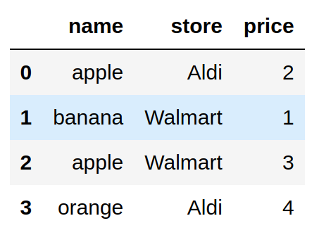

Validate Your pandas DataFrame with Pandera
Contents
4.2. Validate Your pandas DataFrame with Pandera#
4.2.1. Motivation#
In the previous section, I showed how to use Great Expectations to validate your data.
Even though Great Expectations provide a lot of useful utilities, it can be complicated to create a validation suite with Great Expectations. For a small data science project, using Great Expectations can be overkill.
That is why in this section, we will learn about Pandera, a simple Python library for validating a pandas DataFrame.
To install Pandera, type:
pip install pandera
4.2.2. Introduction#
To learn how Pandera works, let’s start with creating a simple dataset:
import pandas as pd
fruits = pd.DataFrame(
{
"name": ["apple", "banana", "apple", "orange"],
"store": ["Aldi", "Walmart", "Walmart", "Aldi"],
"price": [2, 1, 3, 4],
}
)
fruits

Imagine this scenario. Your manager told you that there can only be certain fruits and stores in the dataset, and the price must be less than 4.
available_fruits = ["apple", "banana", "orange"]
nearby_stores = ["Aldi", "Walmart"]
To make sure your data follow these conditions, checking your data manually can cost too much time, especially when your data is big. Is there a way that you can automate this process?
That is when Pandera comes in handy. Specifically, we:
Create multiple tests for the entire dataset using
DataFrameSchemaCreate multiple tests for each column using
ColumnSpecify the type of test using
Check
import pandera as pa
from pandera import Column, Check
schema = pa.DataFrameSchema(
{
"name": Column(str, Check.isin(available_fruits)),
"store": Column(str, Check.isin(nearby_stores)),
"price": Column(int, Check.less_than(4)),
}
)
schema.validate(fruits)
SchemaError: <Schema Column(name=price, type=DataType(int64))> failed element-wise validator 0:
<Check less_than: less_than(4)>
failure cases:
index failure_case
0 3 4
In the code above:
"name": Column(str, Check.isin(available_fruits))checks if the columnnameis of type string and if all values of the columnnameare inside a specified list."price": Column(int, Check.less_than(4))checks if all values in the columnpriceare of typeintand are less than 4.Since not all values in the column
priceare less than 4, the test fails.
Find other built-in Checks methods here.
4.2.3. Custom Checks#
We can also create custom checks using lambda . In the code below, Check(lambda price: sum(price) < 20) checks if the sum of the column price is less than 20.
schema = pa.DataFrameSchema(
{
"name": Column(str, Check.isin(available_fruits)),
"store": Column(str, Check.isin(nearby_stores)),
"price": Column(
int, [Check.less_than(5), Check(lambda price: sum(price) < 20)]
),
}
)
schema.validate(fruits)
4.2.4. Schema Model#
When our tests are complicated, using dataclass can make our tests look much cleaner than using a dictionary. Luckily, Pandera also allows us to create tests using a dataclass instead of a dictionary.
from pandera.typing import Series
class Schema(pa.SchemaModel):
name: Series[str] = pa.Field(isin=available_fruits)
store: Series[str] = pa.Field(isin=nearby_stores)
price: Series[int] = pa.Field(le=5)
@pa.check("price")
def price_sum_lt_20(cls, price: Series[int]) -> Series[bool]:
return sum(price) < 20
Schema.validate(fruits)
4.2.5. Validation Decorator#
4.2.5.1. Check Input#
Now that we know how to create tests for our data, how do we use it to test the input of our function? A straightforward approach is to add schema.validate(input) inside a function.
fruits = pd.DataFrame(
{
"name": ["apple", "banana", "apple", "orange"],
"store": ["Aldi", "Walmart", "Walmart", "Aldi"],
"price": [2, 1, 3, 4],
}
)
schema = pa.DataFrameSchema(
{
"name": Column(str, Check.isin(available_fruits)),
"store": Column(str, Check.isin(nearby_stores)),
"price": Column(int, Check.less_than(5)),
}
)
def get_total_price(fruits: pd.DataFrame, schema: pa.DataFrameSchema):
validated = schema.validate(fruits)
return validated["price"].sum()
get_total_price(fruits, schema)
However, this approach makes it difficult for us to test our function. Since the argument of get_total_price is both fruits and schema , we need to include both of these arguments inside the test:
def test_get_total_price():
fruits = pd.DataFrame({'name': ['apple', 'banana'], 'store': ['Aldi', 'Walmart'], 'price': [1, 2]})
# Need to include schema in the unit test
schema = pa.DataFrameSchema(
{
"name": Column(str, Check.isin(available_fruits)),
"store": Column(str, Check.isin(nearby_stores)),
"price": Column(int, Check.less_than(5)),
}
)
assert get_total_price(fruits, schema) == 3
test_get_total_price tests both the data and the function. Because a unit test should only test one thing, including data validation inside a function is not ideal.
Pandera provides a solution for this with the check_input decorator. The argument of this decorator is used to validate the input of the function.
from pandera import check_input
@check_input(schema)
def get_total_price(fruits: pd.DataFrame):
return fruits.price.sum()
get_total_price(fruits)
If the input is not valid, Pandera will raise an error before the input is processed by your function:
fruits = pd.DataFrame(
{
"name": ["apple", "banana", "apple", "orange"],
"store": ["Aldi", "Walmart", "Walmart", "Aldi"],
"price": ["2", "1", "3", "4"],
}
)
@check_input(schema)
def get_total_price(fruits: pd.DataFrame):
return fruits.price.sum()
get_total_price(fruits)
SchemaError: error in check_input decorator of function 'get_total_price': expected series 'price' to have type int64, got object
Validating data before processing is very nice since it prevents us from wasting a significant amount of time on processing the data.
4.2.5.2. Check Output#
We can also use Pandera’s check_output decorator to check the output of a function:
from pandera import check_output
fruits_nearby = pd.DataFrame(
{
"name": ["apple", "banana", "apple", "orange"],
"store": ["Aldi", "Walmart", "Walmart", "Aldi"],
"price": [2, 1, 3, 4],
}
)
fruits_faraway = pd.DataFrame(
{
"name": ["apple", "banana", "apple", "orange"],
"store": ["Whole Foods", "Whole Foods", "Schnucks", "Schnucks"],
"price": [3, 2, 4, 5],
}
)
out_schema = pa.DataFrameSchema(
{"store": Column(str, Check.isin(["Aldi", "Walmart", "Whole Foods", "Schnucks"]))}
)
@check_output(out_schema)
def combine_fruits(fruits_nearby: pd.DataFrame, fruits_faraway: pd.DataFrame):
fruits = pd.concat([fruits_nearby, fruits_faraway])
return fruits
combine_fruits(fruits_nearby, fruits_faraway)
4.2.5.3. Check Both Inputs and Outputs#
Now you might wonder, is there a way to check both inputs and outputs? We can do that using the decorator check_io :
from pandera import check_io
in_schema = pa.DataFrameSchema({"store": Column(str)})
out_schema = pa.DataFrameSchema(
{"store": Column(str, Check.isin(["Aldi", "Walmart", "Whole Foods", "Schnucks"]))}
)
@check_io(fruits_nearby=in_schema, fruits_faraway=in_schema, out=out_schema)
def combine_fruits(fruits_nearby: pd.DataFrame, fruits_faraway: pd.DataFrame):
fruits = pd.concat([fruits_nearby, fruits_faraway])
return fruits
combine_fruits(fruits_nearby, fruits_faraway)
4.2.6. Other Arguments for Column Validation#
4.2.6.1. Deal with Null Values#
By default, Pandera will raise an error if there are null values in a column we are testing. If null values are acceptable, add nullable=False to our Column class:
import numpy as np
fruits = fruits = pd.DataFrame(
{
"name": ["apple", "banana", "apple", "orange"],
"store": ["Aldi", "Walmart", "Walmart", np.nan],
"price": [2, 1, 3, 4],
}
)
schema = pa.DataFrameSchema(
{
"name": Column(str, Check.isin(available_fruits)),
"store": Column(str, Check.isin(nearby_stores), nullable=True),
"price": Column(int, Check.less_than(5)),
}
)
schema.validate(fruits)
4.2.6.2. Deal with Duplicates#
By default, duplicates are acceptable. To raise an error when there are duplicates, use allow_duplicates=False :
schema = pa.DataFrameSchema(
{
"name": Column(str, Check.isin(available_fruits)),
"store": Column(
str, Check.isin(nearby_stores), nullable=True, allow_duplicates=False
),
"price": Column(int, Check.less_than(5)),
}
)
schema.validate(fruits)
SchemaError: series 'store' contains duplicate values: {2: 'Walmart'}
4.2.6.3. Convert Data Types#
coerce=True changes the data type of a column if its data type doesn’t satisfy the test condition.
In the code below, the data type of price is changed from integer to string.
fruits = pd.DataFrame(
{
"name": ["apple", "banana", "apple", "orange"],
"store": ["Aldi", "Walmart", "Walmart", "Aldi"],
"price": [2, 1, 3, 4],
}
)
schema = pa.DataFrameSchema({"price": Column(str, coerce=True)})
validated = schema.validate(fruits)
validated.dtypes
name object
store object
price object
dtype: object
4.2.6.4. Match Patterns#
What if we want to change all columns that start with the word store ?
favorite_stores = ["Aldi", "Walmart", "Whole Foods", "Schnucks"]
fruits = pd.DataFrame(
{
"name": ["apple", "banana", "apple", "orange"],
"store_nearby": ["Aldi", "Walmart", "Walmart", "Aldi"],
"store_far": ["Whole Foods", "Schnucks", "Whole Foods", "Schnucks"],
}
)
Pandera allows us to apply the same checks on multiple columns that share a certain pattern by adding regex=True :
schema = pa.DataFrameSchema(
{
"name": Column(str, Check.isin(available_fruits)),
"store_+": Column(str, Check.isin(favorite_stores), regex=True),
}
)
schema.validate(fruits)
4.2.7. Export and Load From a YAML File#
4.2.8. Export to YAML#
Using a YAML file is a neat way to show your tests to colleagues who don’t know Python. We can keep a record of all validations in a YAML file using schema.to_yaml() :
from pathlib import Path
# Get a YAML object
yaml_schema = schema.to_yaml()
# Save to a file
f = Path("schema.yml")
f.touch()
f.write_text(yaml_schema)
The schema.yml should look like the below:
schema_type: dataframe
version: 0.7.0
columns:
name:
dtype: str
nullable: false
checks:
isin:
- apple
- banana
- orange
allow_duplicates: true
coerce: false
required: true
regex: false
store:
dtype: str
nullable: true
checks:
isin:
- Aldi
- Walmart
allow_duplicates: false
coerce: false
required: true
regex: false
price:
dtype: int64
nullable: false
checks:
less_than: 5
allow_duplicates: true
coerce: false
required: true
regex: false
checks: null
index: null
coerce: false
strict: false
4.2.9. Load from YAML#
To load from a YAML file, simple use pa.io.from_yaml(yaml_schema) :
with f.open() as file:
yaml_schema = file.read()
schema = pa.io.from_yaml(yaml_schema)